“Smelly Cat” and Sellouts: An English Lesson on Loyalty, Boundaries, and 90s Relationships from Friends’ “The One With Phoebe’s Ex-Partner”
Somewhere in the winter of season three, Phoebe Buffay is sitting with her guitar in Central Perk when a woman from her past walks in through the door. The song that made that moment famous, “Smelly Cat,” has become one of the most recognizable fictional songs in television history, yet the episode built around it is really a masterclass in a completely different subject. It is a lesson in the language of loyalty, betrayal, jealousy, and personal boundaries, delivered by four friends and one unforgettable ex-partner. The study deck behind this article introduces itself with a promise: “A visual English lesson on loyalty, boundaries, and 90s relationships.” The promise is accurate.
The material was assembled with Gemini Notebook, Google’s AI-powered study tool, and it turns one twenty-two-minute sitcom episode into a complete language course. Three storylines, two vocabulary boards, an idiom spotlight, a thematic matrix, a cultural time capsule, true-or-false checks, short-answer prompts, an answer key, and a final writing task all fit inside fifteen richly illustrated boards. This article walks through the entire lesson, quotes its most useful language, and adds interactive practice along the way: flip-cards for the key vocabulary, a scored comprehension quiz, and hover tooltips on the trickiest terms. Readers who want to jump straight into play-based practice can use the gold button above the title.
💡 An interesting observation about how people study now. Every definition, quiz item, and cultural note on this page comes from an AI-assisted study set rather than a textbook. Quoting that AI-generated text in full, explaining it, and then testing yourself against it — exactly what this article does — is a simple, repeatable recipe for turning any show into a language course.
📺 Content and Context: Three Storylines, One Coffee House
The episode braids three plots together, and the deck opens its summary with three snapshots side by side. Each snapshot carries a title and a one-sentence hook, and together they form a compact map of the whole episode.
“Plot A: The Jingle Betrayal. Phoebe reunites with her old singing partner, Leslie, forcing a choice between art and money.”
“Plot B: The Fashion Lecture. Ross lets jealousy drive him into Rachel’s professional world, sparking a fight over independence.”
“Plot C: The Secret Past. Chandler dates Joey’s ex-girlfriend, leading to the discovery of hidden physical secrets.”
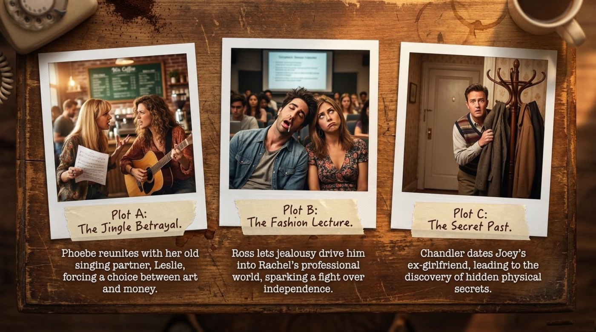
The structure matters for language learners because each storyline lives in a different register of English. Plot A speaks the language of art and business, full of words like jingle and sell out. Plot B speaks the language of offices and ambition, where people keep an eye on someone and defend their independence. Plot C speaks the language of secrets and the body, which turns out to be the funniest and most fragile register of all. Pay attention to those three registers while rereading the quotes below, because vocabulary always sticks better when it is attached to a mood.
💛 Art vs. Commerce: The Jingle Betrayal
The deck reconstructs Phoebe’s storyline as a three-step chain reaction, and the wording deserves to be quoted in full.
“Step 1: Leslie abandoned Phoebe years ago to write commercial jingles (advertising songs). Step 2: Leslie begs to reunite, and Phoebe eventually agrees. Step 3: Leslie plays ‘Smelly Cat’ for an ad agency and tries to sell it for a kitty litter commercial.”
The result line lands like a verdict: “Phoebe refuses to sell out, choosing her artistic integrity over money and the partnership.” The illustration on the board captures the exact moment the partnership dies — Leslie strums the guitar while a printed pitch page headed “Smelly Cat – Kitty Litter Commercial” sits on the table between them. The image is a small piece of visual storytelling: the song that Phoebe wrote for free, for nobody, on a street corner, has been quietly priced, packaged, and carried to a client behind her back.
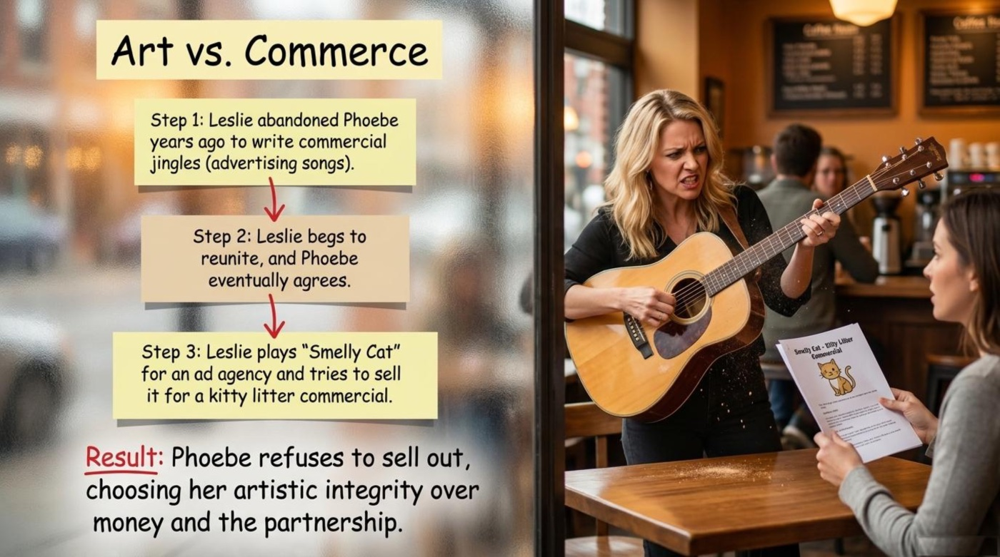
💡 Practical advice. Notice how much work the phrase “sell out” does in one sentence. It compresses an entire moral argument — that some things should not be for sale — into two words, and English speakers use it constantly about artists, athletes, brands, and even friends. Pair it with “artistic integrity” and you can describe almost any creative conflict at work or in conversation. Remember that sell out is informal but not rude, which makes it perfect for opinions: “The band totally sold out.”
🚪 Crossing Professional Boundaries
The second board follows the same cause-action-conflict pattern, and it reads like a case study in how not to support a partner.
“The Cause: Ross is jealous of Rachel’s former coworker (Mark) and insists on attending a 4-hour fashion lecture to keep an eye on her. The Action: Ross finds the lecture incredibly boring and falls asleep (snoring loudly). The Conflict: Rachel is furious. She demands that her work life remains hers alone.”
The board closes with Rachel’s own words, and the line is worth memorizing as a model of calm boundary-setting: “I like that you’re not involved in that part of my life.” The lecture-hall image makes the scene legible in one glance — Rachel takes diligent notes with her pen on the page while Ross, wrapped in his coat, sleeps soundly on her shoulder. He came to guard his relationship and ended up as an embarrassment she has to carry.
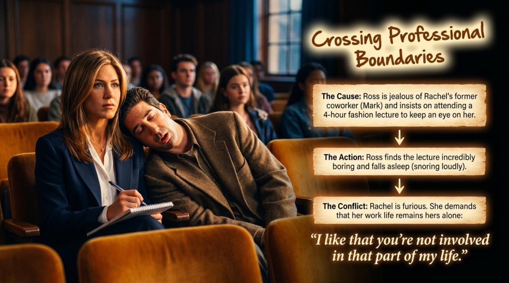
📌 Practical advice. Rachel’s sentence is a complete toolkit for setting a limit without shouting: it names the part of life (that part of my life), states a preference (I like that…), and asks for nothing but distance. Learners can reuse the frame for a gym routine, a hobby, or a friendship group. Contrast it with Ross’s approach, which the deck names precisely — he wanted to keep an eye on her. English keeps those two ideas in separate idioms, and choosing between them says everything about trust.
🦵 Secrets and Double Standards
The third board is drawn as a detective wall, with index cards pinned and connected by red string, because this plot really is a small mystery. The cards read:
“Joey: Accidentally threw Ginger’s artificial leg into a fire four years ago and ran away. Hides when he sees her again.”
“Ginger: The woman with the artificial leg. She begins dating Chandler and asks if her leg bothers him.”
“Chandler: Claims the leg doesn’t bother him, but is insecure about his own physical flaw (a ‘nubbin’ or third nipple).”
“The Irony: When Ginger discovers Chandler’s third nipple, she is disgusted and immediately dumps him.”
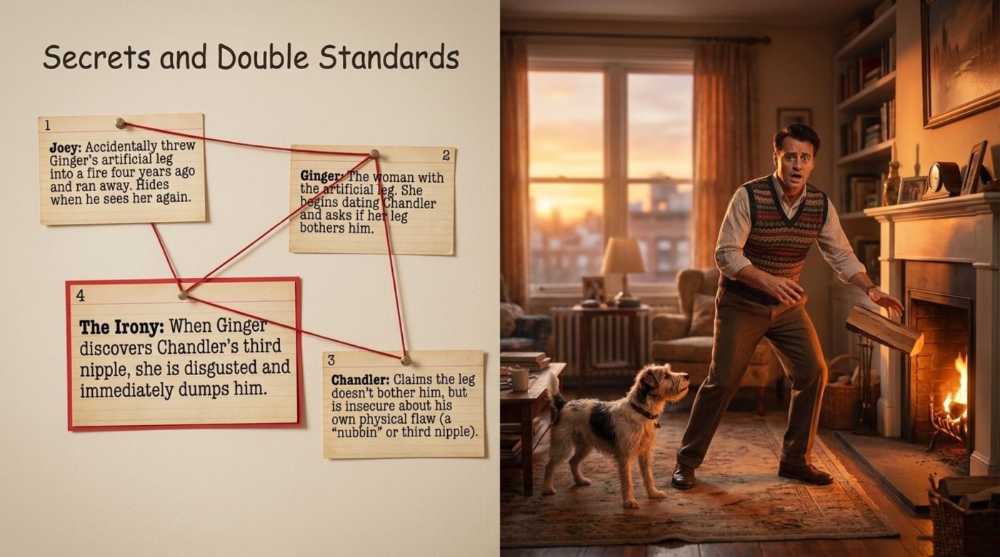
The lesson inside the lesson is that everyone in this triangle is hiding something, and only Ginger is honest enough to ask a direct question about her own body. Joey’s escape from a cabin fire years earlier and Chandler’s confident lies about acceptance set up the episode’s sharpest punchline. The deck’s own title for the board — “Secrets and Double Standards” — tells learners exactly which two ideas to carry away from it.
📟 A 90s Time Capsule: Pagers and Jingles
The deck pauses for cultural background, and the explanation is quoted here in full because it solves two comprehension problems at once.
“The Pager (Beeper): Before cell phones, people carried pagers. When someone wanted to reach you, they called a number, and your pager would beep with their phone number. Phoebe hides hers in a cooking pot to muffle the sound because she wants to ignore Leslie.”
“The Jingle: In 90s advertising, a jingle was a short, catchy, original song written specifically to sell a product on TV or radio. Leslie left her musical partnership with Phoebe because jingles paid a lot of money.”
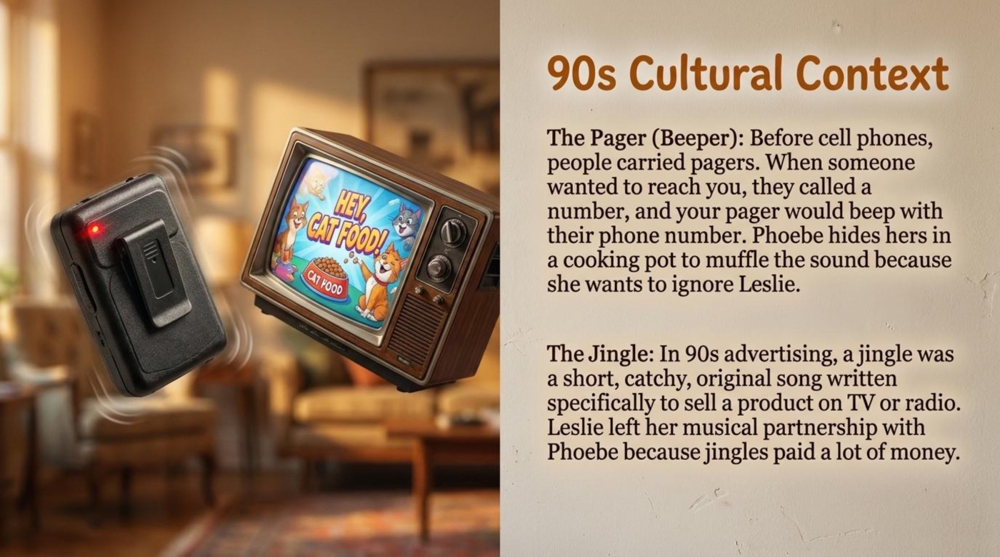
💡 Practical advice. Cultural notes like this one are not trivia — they are comprehension insurance. A viewer who has never heard a pager beep will miss why Phoebe’s cooking pot is funny, and a learner who has never heard a jingle will miss why “Smelly Cat” is worth fighting over. Whenever a show references old technology, take thirty seconds to picture the object in use. The same habit unlocks decades of English-language film and television.
📚 Vocabulary and Language Takeaways
The deck stops the story twice to teach words at the exact moment they happen on screen, and the first board groups three phrasal verbs around a New York street window. The cards define each verb, give its part of speech, and anchor it to one character’s meltdown. That anchoring is deliberate and worth copying in any study routine: a word learned without a scene is a word soon forgotten.
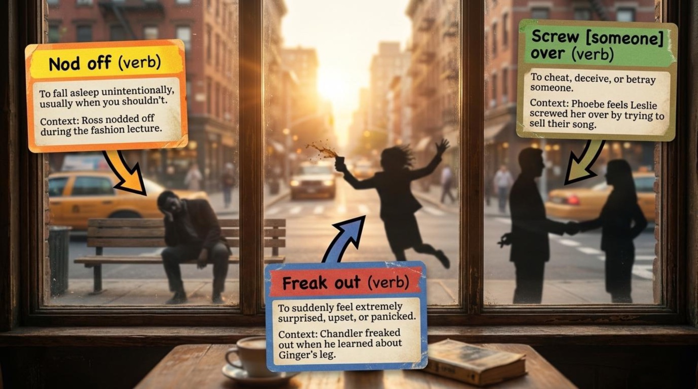
1. nod off (verb)
Literal meaning: to drift into sleep without intending to.
Figurative / contextual meaning: the phrase implies that sleeping was inappropriate — in a meeting, in class, or in Rachel’s case, in a four-hour fashion lecture. It carries a mild comic accusation.
Example from the material: “Ross nodded off during the fashion lecture.” The phrasal verb makes the sentence funny in a way that “fell asleep” would not, because nod off pictures the head slowly dropping.
How the material explains it: the card reads, “To fall asleep unintentionally, usually when you shouldn’t.” The second half of that definition — when you shouldn’t — is the whole point, and the deck reinforces it with Ross’s snoring as the visual punchline.
2. screw (someone) over (verb, informal)
Literal meaning: none — this is a phrasal verb, and its force is entirely figurative.
Figurative / contextual meaning: to cheat, deceive, or betray someone, usually for personal gain and usually by someone who was supposed to be on their side.
Example from the material: “Phoebe feels Leslie screwed her over by trying to sell their song.” The line names the emotional math of the plot: a shared song, a private betrayal, and a friendship priced in dollars.
How the material explains it: the card states, “To cheat, deceive, or betray someone,” and immediately attaches it to Phoebe’s grievance. Notice that the object sits inside the phrase — screwed her over — which is the natural word order learners should practice.
⚠️ Register warning. Screw over is informal and mildly rude. It belongs in conversations with friends, comedy recaps, and text messages — not in business emails or academic writing. The neutral alternatives are betray, deceive, or treat someone unfairly.
3. freak out (verb)
Literal meaning: none — the verb is idiomatic.
Figurative / contextual meaning: to suddenly feel extremely surprised, upset, or panicked; to lose composure in a burst.
Example from the material: “Chandler freaked out when he learned about Ginger’s leg.” The deck’s detective-wall wording confirms the reaction: Chandler claims the leg does not bother him, and his panic says otherwise.
How the material explains it: the card reads, “To suddenly feel extremely surprised, upset, or panicked.” The word suddenly matters — English also has panic and worry, but freak out is specifically the loud, visible, immediate version.
The second vocabulary board moves from actions to things — two nouns and one adjective — and arranges them on a wooden table beside a battered notebook, a prosthetic boot, and a beeping pager inside a pot. The props are the definitions.
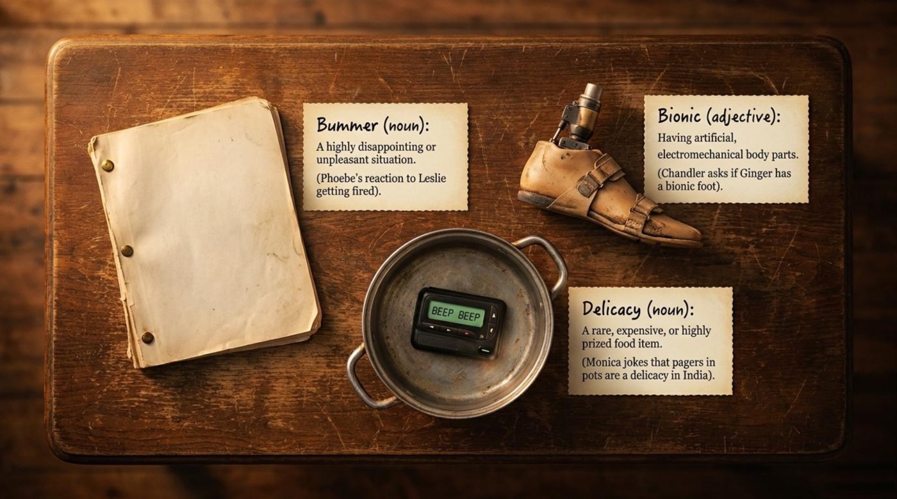
4. bummer (noun, informal)
Literal meaning: none — the word is slang.
Figurative / contextual meaning: a highly disappointing or unpleasant situation; a small misfortune deserving sympathy.
Example from the material: the card ties the word directly to the plot: “Phoebe’s reaction to Leslie getting fired.” One word of sympathy after a rival’s misfortune — and Phoebe’s version is anything but sincere.
How the material explains it: the card defines it as “A highly disappointing or unpleasant situation.” Learners should note the two most common patterns: What a bummer! and That’s such a bummer.
5. bionic (adjective)
Literal meaning: having artificial, electromechanical body parts.
Figurative / contextual meaning: in the episode the word is a joke with a nervous edge — Chandler’s clumsy way of asking about Ginger’s prosthetic leg.
Example from the material: “Chandler asks if Ginger has a bionic foot.” The sci-fi flavored adjective turns an awkward question into a memorable line, which is exactly why the deck chose it.
How the material explains it: the card reads, “Having artificial, electromechanical body parts.” The word originally lives in science fiction, and knowing that origin helps learners understand why the joke sounds both futuristic and inappropriate at a dinner date.
6. delicacy (noun)
Literal meaning: a rare, expensive, or highly prized food item.
Figurative / contextual meaning: the deck uses the word sarcastically — a kitchen object becomes an imaginary exotic dish.
Example from the material: “Monica jokes that pagers in pots are a delicacy in India.” The joke needs both halves to work: the literal food meaning and the absurd image of a beeping gadget served in a cooking pot.
How the material explains it: the card defines it as “A rare, expensive, or highly prized food item,” then shows the sarcastic use in brackets. It is a compact demonstration of how English speakers bend a respectable word for comedy.
7. the ice woman (idiom)
Literal meaning: a woman made of ice — frozen, hard, untouchable.
Figurative / contextual meaning: someone who is very cold and unyielding, pretending to have no emotions or forgiveness, usually after being hurt.
Example from the material: Phoebe vows to become this figure if her friends ever betray her — and then immediately undermines the vow by asking for a tissue, because she is already crying.
How the material explains it: the idiom spotlight states, “Definition: Someone who is very cold, hard, and unyielding; pretending to have no emotions or forgiveness,” and then devotes its second panel to the irony, which Section 3 examines closely.
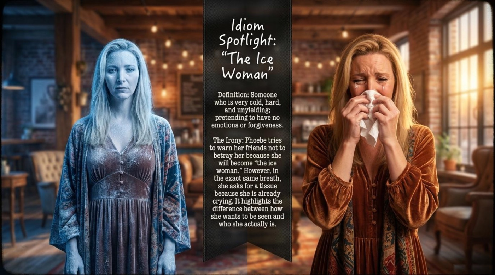
Two more expressions from other boards deserve a place in the rotation. The result line of the Art vs. Commerce board gives the episode its moral verb: “Phoebe refuses to sell out, choosing her artistic integrity over money and the partnership.” To sell out means to abandon one’s principles for money or success, and the noun form sellout is an insult no artist wants. The thematic board, meanwhile, offers the assertiveness idiom stand your ground: “Phoebe stands her ground and rejects the partnership.” The phrase pictures a person planted in place, refusing to be pushed — a fitting image for a woman guarding one song.
🎯 Flip-Card Practice: Nine Terms in Rotation
The nine key terms of the lesson are collected below as interactive flip-cards. The front of each card shows the term, its part of speech, and a one-line hook; the back holds the literal meaning, the contextual meaning, an example from the material, and a short note on why the term matters. Each card carries its own accent color, and the button below the grid turns the whole set over at once.
📌 How this connects to the theme. Every term on these cards is a boundary word. Nod off crosses a professional line, screw over breaks a loyalty line, freak out exposes a hidden line, and the ice woman is what a person builds after a line is crossed. Learning vocabulary inside a story about boundaries means the words arrive with their emotions already attached.
💎 Deeper Meaning: Metaphors and Symbols
Before zooming into individual symbols, it helps to see the pattern the deck itself draws. Its thematic board compresses the episode into three rows, quoted here as the deck presents them under the heading “The Thematic Matrix: Testing Boundaries.”
- Phoebe & Leslie — the conflict is “Art vs. Commercial Money”, and the resolution is that “Phoebe stands her ground and rejects the partnership.”
- Ross & Rachel — the conflict is “Jealousy vs. Independence”, and the resolution is that “Rachel demands Ross stay out of her professional life.”
- Chandler & Ginger — the conflict is “Acceptance vs. Physical Flaws”, and the resolution is that “Ginger rejects Chandler for his flaw, despite demanding acceptance for hers.”
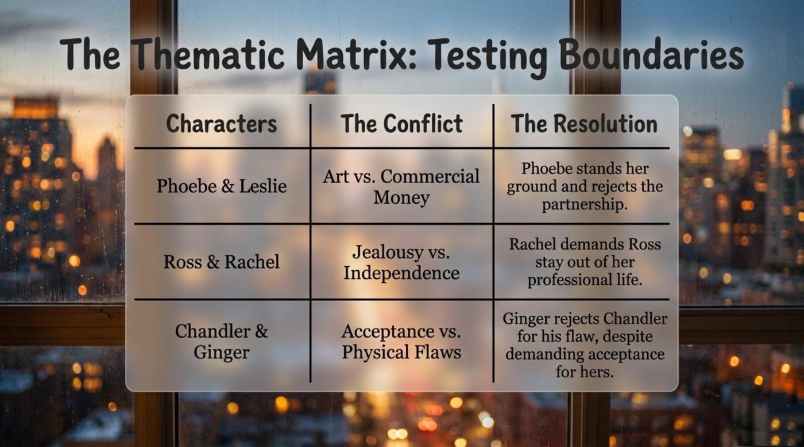
The matrix reveals the episode’s core thesis. All three stories are versions of the same event: one person draws a line, and another person tests it. The metaphors and symbols below are the shapes those lines take.
🧊 The Ice Woman: The Armor We Wear
The deck’s idiom spotlight is the richest symbol in the lesson, and its irony is quoted here in full: “Phoebe tries to warn her friends not to betray her because she will become ‘the ice woman.’ However, in the exact same breath, she asks for a tissue because she is already crying. It highlights the difference between how she wants to be seen and who she actually is.” The image of a frozen, unbreakable woman is armor that Phoebe puts on the moment she feels vulnerable, and the tissue in her hand proves the armor has a zipper in the back. The symbol teaches a mature lesson about language: people describe themselves in their strongest moments and are known by their weakest ones. For learners, the phrase the ice woman (and its variant ice queen) is a ready-made way to talk about anyone performing coldness on purpose.
🎸 “Smelly Cat”: A Song as a Line in the Sand
A silly song about a malodorous cat becomes the episode’s symbol of artistic integrity, and the deck frames it that way twice. The Art vs. Commerce board ends with “Phoebe refuses to sell out, choosing her artistic integrity over money and the partnership,” and the cultural board explains what a jingle is: “a short, catchy, original song written specifically to sell a product on TV or radio.” Between those two statements lies the whole argument — the same melody can be a gift or a product, depending on who is holding it. “Smelly Cat” matters because it is worthless commercially and priceless personally, which is precisely why Leslie’s kitty-litter pitch feels like a betrayal rather than an opportunity. The symbol gives learners a concrete anchor for the abstract noun integrity: integrity is refusing to let the song become an advertisement.
🦿 The Leg and the “Nubbin”: Mirrored Imperfections
The third symbol is a pair. Ginger’s artificial leg and Chandler’s nubbin — the deck’s word for “a ‘nubbin’ or third nipple” — are two physical secrets that mirror each other, and the detective board spells out the mirrored logic: Chandler “claims the leg doesn’t bother him, but is insecure about his own physical flaw,” and then “when Ginger discovers Chandler’s third nipple, she is disgusted and immediately dumps him.” The thematic matrix names the pattern “Acceptance vs. Physical Flaws” and records the resolution with dry precision: Ginger rejects Chandler “despite demanding acceptance for hers.” The symbol is a double standard made visible, and it lands hard because the episode spends its funniest scenes building it. The takeaway for readers is rhetorical as much as moral — the word irony is best learned through examples exactly like this one, where a person’s stated rule collapses on their own behavior.
🍲 The Pager in the Pot: Avoidance You Can Hear
The smallest symbol in the lesson is a kitchen gadget doing emotional work. The cultural board explains the mechanics — “Phoebe hides hers in a cooking pot to muffle the sound because she wants to ignore Leslie” — and that single sentence carries a whole psychology. A pager is a device whose only job is to make itself heard, so silencing one inside a soup pot is a physical metaphor for avoidance: the message still arrives, the recipient just refuses to let it ring. The deck pairs this with Monica’s sarcastic delicacy joke, turning the pot into the episode’s funniest prop. For language learners, the image is a memorable anchor for the vocabulary of muffle and for the modern habit it parodies — leaving messages on read is the pocket-sized descendant of the pager in the pot.
🧠 Comprehension Check: The Interactive Quiz
The deck closes with two self-check boards. The first one is a chalkboard holding four true-or-false statements about Leslie’s career, Ross’s motives, Joey’s fireplace accident, and Chandler’s breakup; the second is a yellow notepad asking for short answers about Phoebe’s refusal, Rachel’s boundary line, and the flaw that ends a dinner date. The interactive quiz below extends those checks with eight questions drawn directly from the material — comprehension items, vocabulary in context, true-or-false statements, and fill-in-the-blank sentences. Instant feedback appears after every click, the score bar counts each point, and a final panel sums up the run.
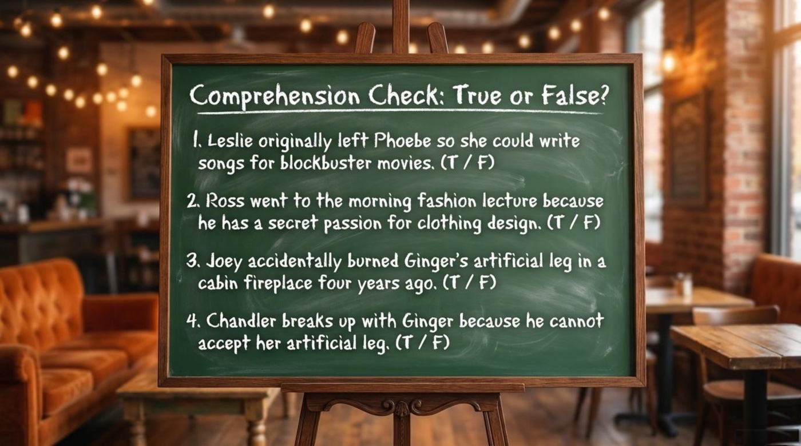
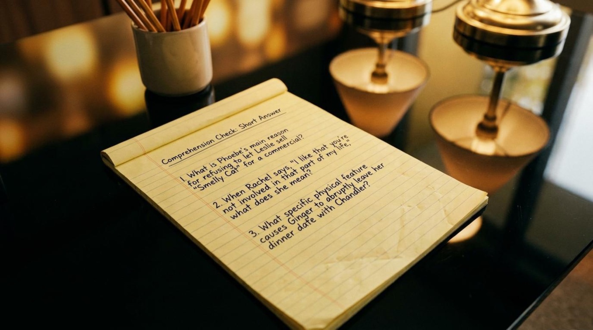
The deck even ships its own answer key, and the key confirms exactly which statements are traps. Leslie wrote “commercial jingles, not movies”; Ross went to the lecture “out of pure jealousy to keep her away from Mark”; Joey’s fireplace accident is marked True; and the final breakup is “Ginger dumped Chandler because of his ‘nubbin’.” The key also models perfect short answers, including the thesis of the whole lesson: Phoebe refuses because “selling out ruins the integrity of the song.”
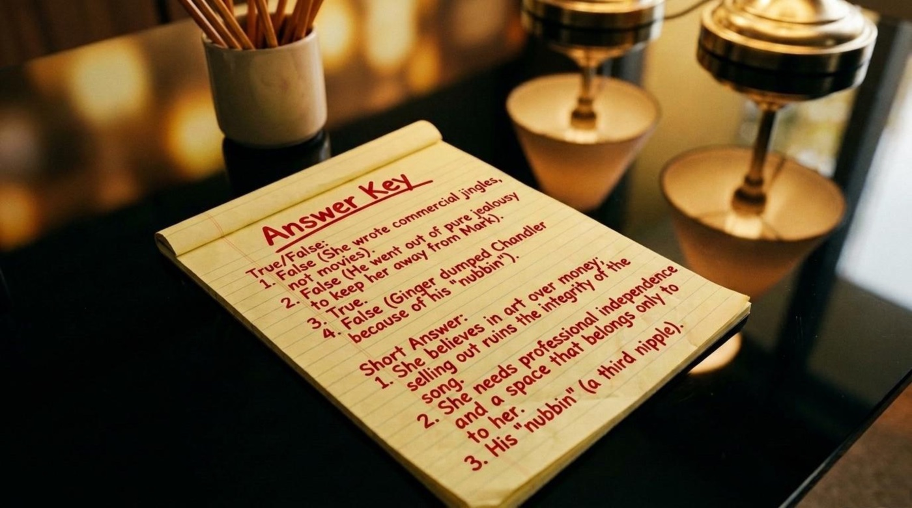
☕ The Last Sip: Keep Practicing
The final board of the lesson is the warmest one: two hands clinking coffee mugs above the words “End of Lesson.” Its message is the sentence every language learner should tape above a desk: “Great job! Keep practicing your English with your favorite shows.” The main takeaway of the whole material is that favorite shows lower the anxiety of learning — the vocabulary arrives inside jokes and heartbreaks instead of word lists, and a story about a guarded song is easier to remember than a rule about phrasal verbs.
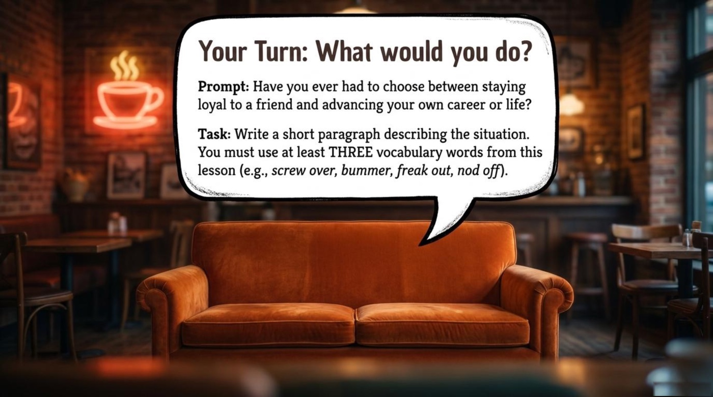
The deck ends by handing the work back to the reader, and its task deserves the effort. The final prompt asks for a short paragraph about a moment of choosing between staying loyal to a friend and advancing a career, and the task states the requirement plainly: “Write a short paragraph describing the situation. You must use at least THREE vocabulary words from this lesson (e.g., screw over, bummer, freak out, nod off).” Rewatch the episode with the deck open, write the paragraph, run the quiz above one more time, and then open the complete board set from the Lesson Files section below. The coffee house, as the final image promises, is always open.
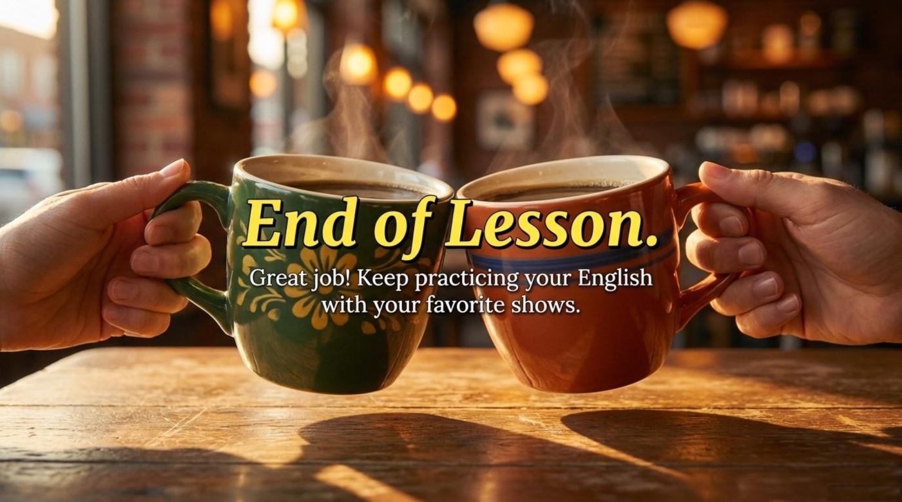
📎 Lesson Files
The complete visual lesson deck that accompanies this article sits in the same folder as this page. Open it in a new tab and review the boards at your own pace:
- friends-314.pdf — the full lesson deck: “The One With Phoebe’s Ex-Partner”, a visual English lesson on loyalty, boundaries, and 90s relationships.